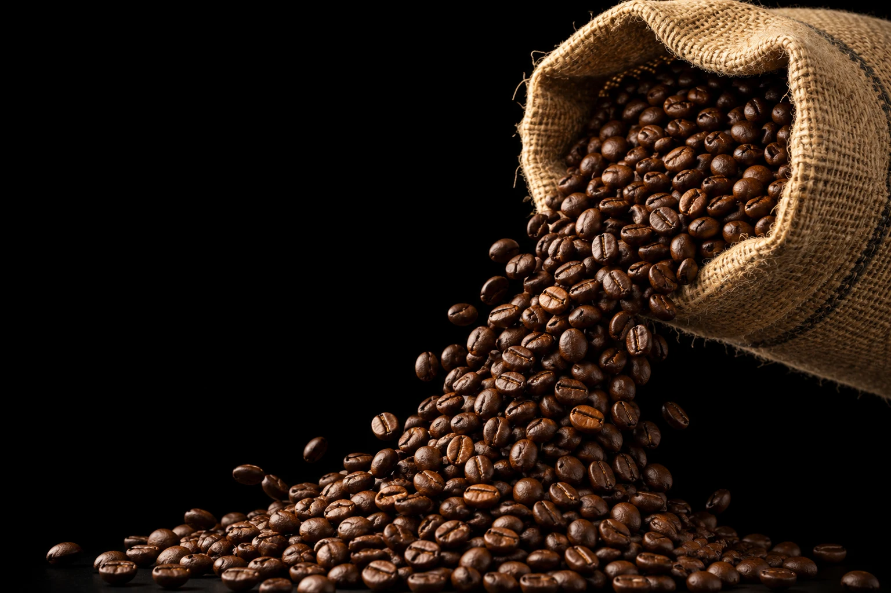
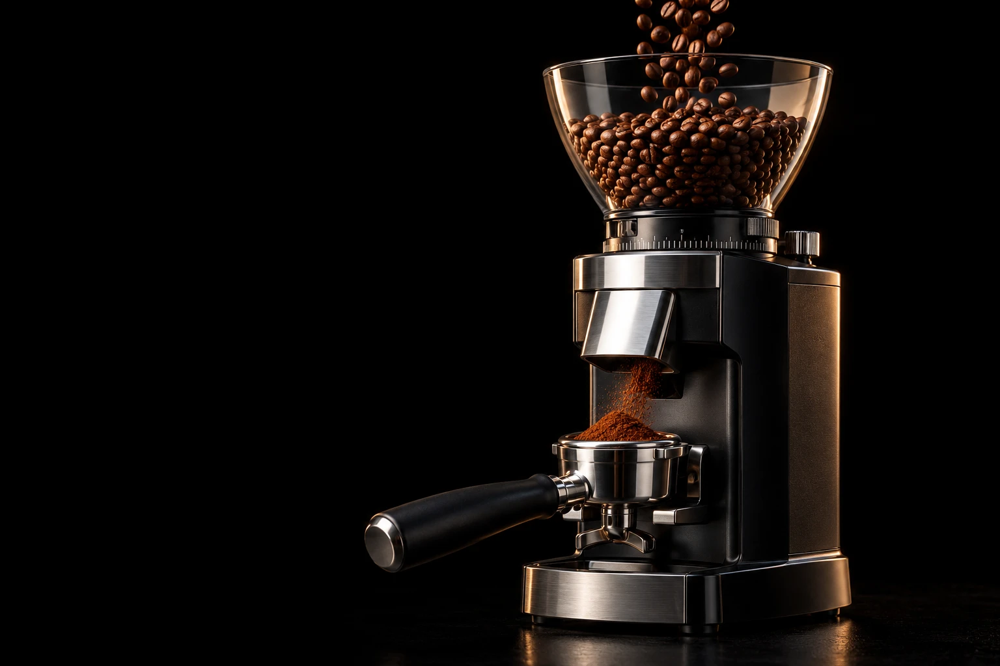
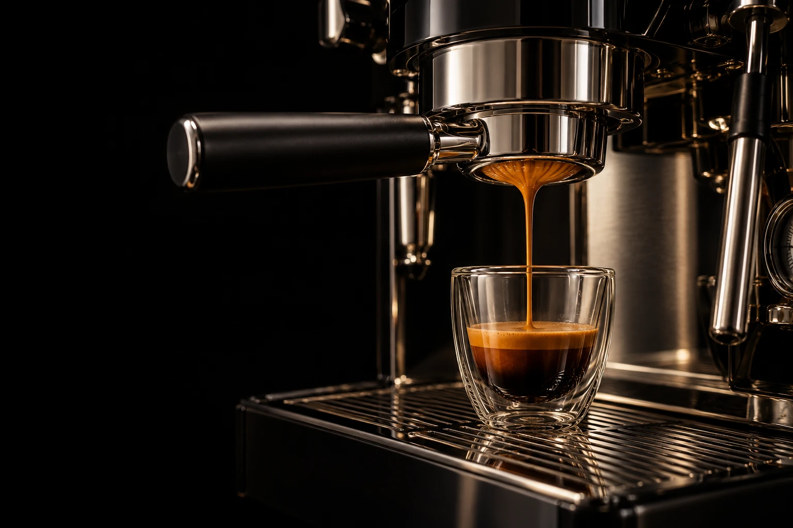

Espresso Bar
کافه دانهاز گونی تا فنجان
دانههای عربیکای تازهبرشته. اسکرول کنید تا مرحلهبهمرحله ببینید یک شات اسپرسو چطور ساخته میشود.
دانههای عربیکای تازهبرشته. اسکرول کنید تا مرحلهبهمرحله ببینید یک شات اسپرسو چطور ساخته میشود.
برشت متوسط تا تیره، با روغن طبیعی روی سطح دانه و عطری که از همان لحظهی اول پخش میشود.
پودری ریز و یکدست مستقیم داخل پرتافیلتر میریزد؛ هیچ قهوهای از قبل آسیاب نمیشود.
تمپ یکنواخت تا آب با فشار برابر از همهی پودر عبور کند و عصاره متعادل بماند.
گروپهد گرم و دمای پایدار؛ همهچیز برای عصارهگیری آماده است.
عصاره مثل عسل گرم از دهانه سرازیر میشود و آرامآرام فنجان را پر میکند.
لایهای پرحجم و فندقی روی فنجان مینشیند و بخارش بالا میرود. حالا نوبت شماست.
سفارش همین اسپرسوهر فنجان کافه دانه همان مسیری را طی میکند که بالاتر دیدید؛ از انتخاب دانه تا آخرین قطرهی عصاره.

عربیکای تکخاستگاه از اتیوپی، کلمبیا و برزیل؛ برشتهشده در کارگاه خودمان.

هر شات درست در لحظهی سفارش آسیاب و با ترازو وزن میشود.

نسبت ۱ به ۲، فشار ۹ بار و کرمایی که تا آخرین جرعه میماند.
هر روز، از صبح تا آخر شب. سفارش بیرونبر و ارسال دانهی برشته به سراسر کشور.